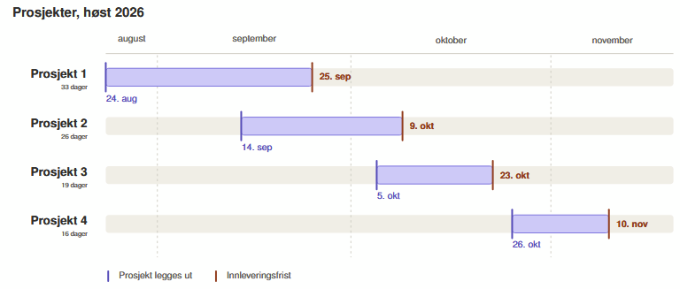

Fagoversikt
Under finner du praktisk informasjon relatert til emnet. For mer informasjon om faget se emnets offisielle NTNU side her.
Piazza
I faget bruker vi Piazza som diskusjonsforum. Her kan du stille både faglige og praktiske spørsmål: https://piazza.com/ntnu.no/fall2026/tdt4172
For faglige spørsmål anbefaler vi dessuten å møte opp i øvingstimene. Se under.
Forelesninger
Forelesninger holdes 12:15-14:00 hver onsdag i F1, med første forelesning onsdag 19. august.
Det er mange studenter som tar emnet, så dersom denne forelesningen blir helt full blir det holdt en ekstra forelesning 14:15-16:00 (rett etter den første) i A2, men kun om den første blir full.
En detaljert semesterplan kommer snart.
Øvingstimer
Frivillige øvingstimer starter opp i uke 35 (fra mandag 25. august). Her vil det sitte studentassistenter som kan gi hjelp og veiledning med øvinger og pensum.
Generelt, for oversikt over timeplanen så kan du se her.
Prosjekter
I faget har vi fire obligatoriske prosjekter. Prosjektene vurderes kun til bestått /ikke bestått, men alle må være bestått for å kunne ta eksamen. Figuren under viser en tentativ plan for når prosjektene blir lagt ut, og når de skal leveres.

Kontakt
Kontakt
Det er mange studenter som tar emnet, og vi har derfor noen retningslinjer for henvendelser til fagstaben:
- Hvis du har et faglig spørsmål, spør i øvingstimene eller på Piazza. Om du ikke får et fullgodt svar i øvingstimen, still gjerne et oppfølgingsspørsmål på Piazza (eller omvendt).
- Hvis du har et generelt praktisk eller administrativt spørsmål, sjekk FAQ (under).
- Hvis du har et spørsmål som gjelder deg personlig (f.eks. utsatt frist), send en e-post til
tdt4172-undass@idi.ntnu.no. Eposter her går kun til undervisningsassistentene Ådne Børresen og Tryggve Klevstul-Jensen. Vi videresender henvendelsen din hvis det er behov for det.
E-post til resten av fagstaben blir ikke besvart.
FAQ
Blir forelesningene tatt opp eller strømmet? Nei, men forelesningsnotater legges ut her på Canvas.
Kommer det forelesningsnotater fra første forelesning? Nei, første forelesning var en introduksjon uten teoretisk innhold. Notater legges ut fra og med andre forelesning.
Er forelesningene obligatoriske? Nei.
Hva kreves for å kunne gå opp til eksamen? Alle prosjektene må være godkjente. Ingenting annet i emnet er obligatorisk.
Kan man levere prosjektene gruppevis? Nei, prosjektene leveres alene. Det er lov å samarbeide om problemløsingen, men besvarelsen er et individuelt arbeid som du må stå inne for. Oppgi i tekstfeltet hvem du har samarbeidet med.
Hva er pensum? Hva kommer på eksamen? Pensum defineres av forelesningene og prosjektene.